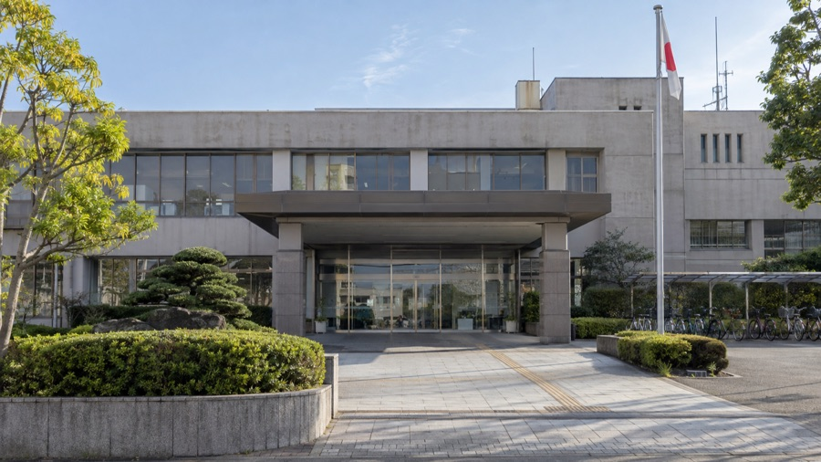

子育て支援金
子育て支援金は2028年度に向けて段階的に引き上げられ、平均で月額およそ450円の負担になる見込みです。年収によって増える分がいくらになるのかを、試算表にしてお伝えしました。
これまでにやったこと子育て支援金の本人負担額を、年収別の試算表にしてお知らせしました。
決まったことを、数字と表でわかりやすく。市政を身近にお伝えします。
昭和47年（1972年）6月生まれ。元衆議院議員 森本かずよし氏の秘書を務め、国政と地域の現場の両方で政治の仕事に携わってきました。2023年4月23日執行の豊明市議会議員選挙において初当選（得票1,311票）し、現在1期目です。
市議会では会派「未来クラブ」に所属しています。議会で決まったことや市の制度の変更は、わかりやすくまとめて市内の皆さまにお届けしています。
これまで市内の皆さまにお伝えしてきたテーマです。
子育て支援金は2028年度に向けて段階的に引き上げられ、平均で月額およそ450円の負担になる見込みです。年収によって増える分がいくらになるのかを、試算表にしてお伝えしました。
歩行中に亡くなったりけがをしたりした方は、7歳が最も多いという統計があります（令和2〜6年の合計3,436人）。ちょうど小学校に上がる年齢です。
市の中小企業向けの補助制度は、雇用確保・人材育成・販路拡大・経営革新の4つに分かれています。どの経費が対象になるのかをまとめてお伝えしました。
上下水道使用料は令和8年4月1日から改定されます。世帯の人数によって増え方が違うため、現行と改定案を比べられる形でお伝えしました。市役所・市議会の開庁時間の変更（2026年6月1日から試験実施）もお知らせしています。
まちの暮らしのそばで、市政の動きをお伝えしています。
議会と地域での取り組みをお知らせしています。

2026年6月1日から試験的に実施されている市役所本庁舎各課・議会事務局の開庁時間の変更（午前9時〜午後5時、窓口の最終受付は午後4時45分）についてお知らせしました。
雇用確保・人材育成・販路拡大・経営革新の4区分について、補助の対象になる経費をまとめてお伝えしました。
令和8年4月1日からの使用料改定について、世帯人数ごとの現行と改定案を比較してお知らせしました。
歩行中の死傷者は7歳が最も多いという全国の統計（令和2〜6年合計）を取り上げ、通学路の安全についてお伝えしました。
2023年4月23日執行の豊明市議会議員選挙において初当選しました（得票 1,311票）。